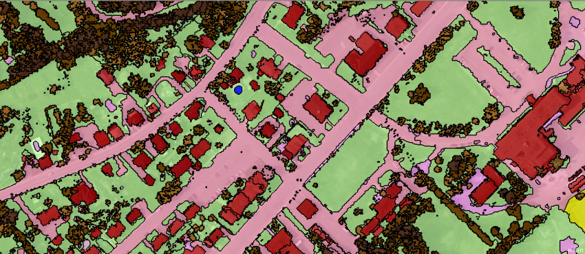
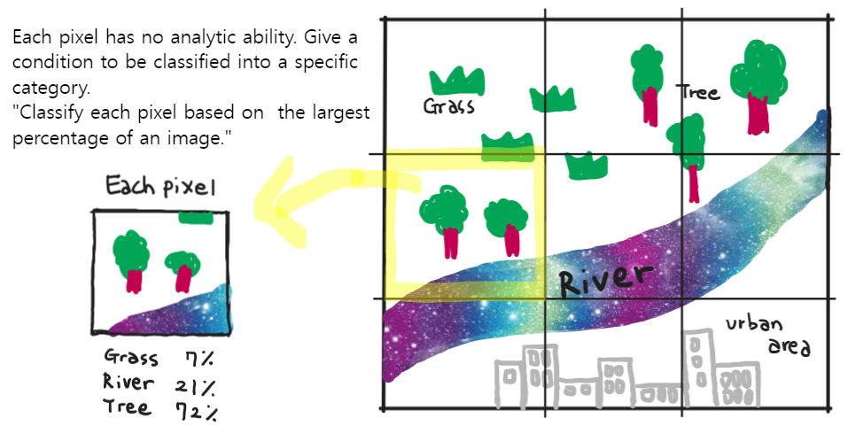
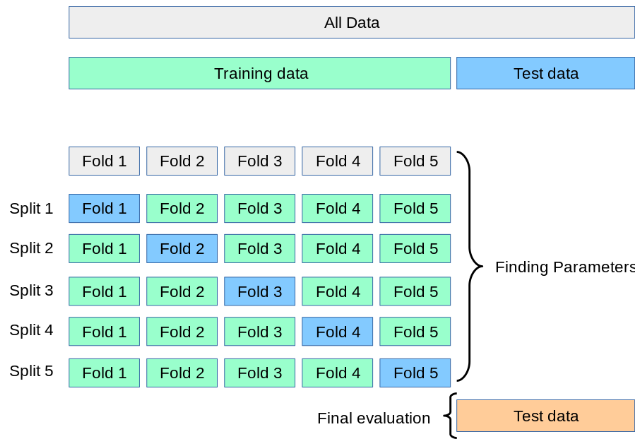
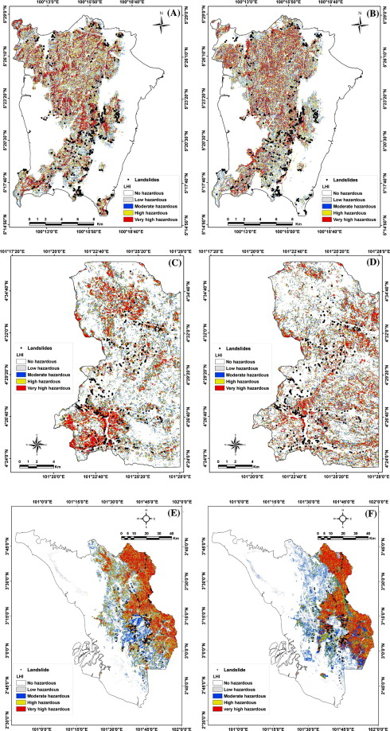
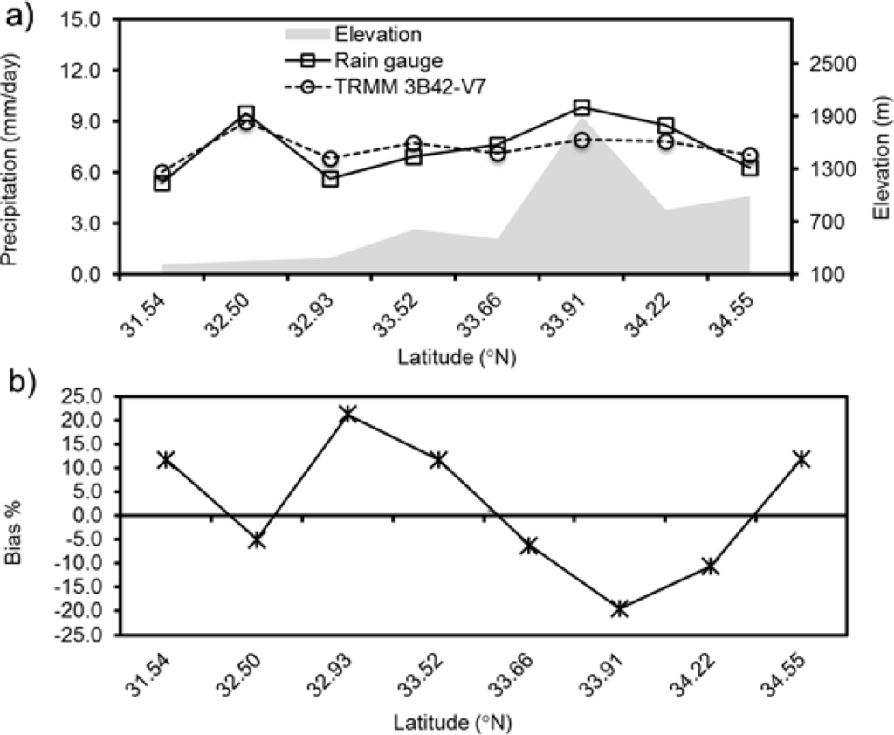
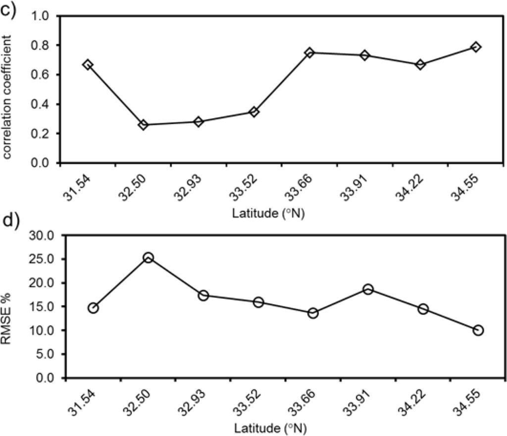

7. Classification II
This is a learning diary for week 7.
We learned about various classification methods last week. But we can also use pre-classified data or other methods for improved accuracy!
7.1 Summary
7.1.1 Pre-classified data
The representative pre-classified data is Dynamic World. But we need to consider a few things before we use it, such as which data was used, its scale/grid, data training ML method etc.
7.1.2 Object-based image analysis (OBIA)
- “The solution is an object, not pixels!”
- OBIA consists of two parts: Segmentation and Classification.
7.1.2.1 Segmentation
- Unlike a traditional pixel-based image classification, OBIA segments an image grouping small pixels together into vector objects based on similarity (homogeneity).
7.1.2.2 Classification
There is no rule to classify land cover features but some statistics according to GISGeography
Types Method Water flat (low nDSM), it accumulates into depressions (high TWI or low TPI), it has a low temperature (thermal infrared – TIRS) and it has high near-infrared absorption (negative NDVI) Trees varying heights (high nDSM standard deviation) and have high near-infrared reflectance (high NDVI) Buildings often rectangle (high rectangular fit), are tall (high nDSM), and have high slopes Grass short (low nDSM), it’s flat (low nDSM standard deviation), and has moderate near-infrared reflectance (moderate NDVI) Roads reflect a lot of light (high RGB), they are flat (low nDSM), have a high light intensity, and it has a low or negative NDVI
7.1.3 Sub-pixel analysis
Sub pixel analysis is also called as
Spectral Mixture Analysis (SMA) or Linear spectral unmixing
What if we have a pixel with a range of land cover types? How can we classify it?

7.1.4 Accuracy
7.1.4.1 Why does accuracy important?
- It determines the quality of the information derived from remotely sensed data.
- Remote sensed data are often used for mapping and developing environmental models that are used for management and decision making purposes. (Source: GSP216)
- Therefore, the validity of classification results must be verified.
7.1.4.2 Error Matrix
| Types | Feature |
|---|---|
| Total / Overall Accuracy |
|
| Producer accuracy |
|
| User accuracy |
|
7.1.4.3 Kappa Coefficient
Probability to gain the reliability of two observers (or evaluators)
To measure the consistency of measurement category values between evaluators.
It’s ineffective -> it’s actually meaningless accuracy
7.1.5 How to improve the accuracy of our data?
7.1.5.1 Cross Validation(CV)

Evaluate performance by dividing data over and over again and learning multiple models.
Calculate the average performance of multiple sets of training/testing data -> increased accuracy
Advantage ⭕ Disadvantage ❌ All datasets can be utilised for training. (Preventing underfitting due to lack of data) Due to the high number of iterations, it takes a long time to train/evaluate the model.
7.1.5.2 Spatial Cross Validation
If Spatial cross-validation is not done, the model would have better accuracy that it actually does.
7.2 Application
7.2.1 Landslide hazard analysis in Malaysia
Pradhan (2010) used remote sensing data (SPOT 5, Landsat TM) and GIS for landslide hazard analysis in the Penang, Cameron and Selangor areas in Malaysia. Ten factors were computed for the logistic regression coefficient: slope, distance from drainage, soil type, land cover, etc. And then, the multivariate logistic regression model was applied and cross-validated for the three study areas.
As a result, Selangor showed the highest accuracy(94%), whereas Penang showed the lowest accuracy(86%) based on the same research area. In using cross-validation to improve accuracy, the case of Selangor based on the logistic coefficient of Cameron showed the highest (90%) prediction accuracy. It shows it is possible to get a meaningful result for preliminary landslide hazard mapping when using the cross-application model.

Fig. 3. Landslide hazard maps of study areas using coefficients of other two areas; (A) Penang based on logistic regression coefficients of the Cameron datasets; (B) Penang based on logistic regression coefficients of the Selangor datasets; (C) Cameron based on logistic regression coefficients of the Penang datasets; (D) Cameron based on logistic regression coefficients of the Selangor datasets; (E) Selangor based on logistic regression coefficients of the Penang datasets; and (F) Selangor based on logistic regression coefficients of the Cameron datasets.
7.2.2 Flood in Pakistan
According to the study of Khan et al. (2014), floods in Pakistan’s lower Indus River basin were monitored. The data sets used are as follows:
| Dataset | Why it is used |
|---|---|
| MODIS | to delineate the extent of the 2010 flood along the Indus River |
| Advanced Synthetic Aperture Radar (ASAR) | to detect floods over the lower Indus river basin |
| Advanced Microwave Scanning Radiometer (AMSR-E) | a proxy for river discharge* |
| Tropical Rainfall Measuring Mission (TRMM) | to estimate rainfall |
* the water surface signal detected by AMSR-E was cross-validated with ground-based river discharge observations at multiple streamflow stations along the main Indus River.


Figure 5. Precipitation comparison of satellite with rain gauge observations for 2010 Monsoon season over (31–35°N latitude bands; (a) mean precipitation comparison between TRMM 3B42V7 and Rain gauge; (b) Bias (%); (c) Pearson’s correlation coefficient; (d) Root Mean Squared Error.
In this study, the Pearson correlation coefficient and four statistical indices were used to verify the error and bias between satellite precipitation and gauge observations.
As a result, at the daily scale of the 2010 flood year, the statistical index was related to the geo-topographic distribution of gauge stations as well as the precipitation intensity, as shown in Figure 5b. In addition, there was an overall high correlation at the higher latitudes compared with other satellite precipitation products, as shown in Figure 5c.
It has been found that this prediction can provide significant improvements to river flow forecasts downstream in Pakistan, a region with limited availability of ground based rain gauges and river discharge measurements.
7.3 Reflection
In analysing specific data for research/study, the reliability of the research results depends on the accuracy of the data. We learned various (image) classification methods last week (week 6) and also learned how to check the accuracy accordingly this week (week 7). It was not that unfamiliar to understand for me because it was related to the spatial correlation I learned in the GIS module in the first term.
It was interesting that we can use machine learning technology for cross-validation by repeating each data differently. When it comes to 7.2.2, there are two noteworthy results: 1. There is no perfect single sensor for reliable flood monitoring. 2. However, utilising various remote sensing data can be the way forward in flood disaster risk reduction. It made me think again that it was up to researchers/people to decide how to use this technology.
In the case of the Kappa coefficient, it was surprising that it still continues to be used in formal research papers even though it is an accuracy measurement method that does not work well.
I was also very interested to learn about the principle of sub-pixel analysis. I haven’t thought about the principle of image classification and how it works, but it is like a fun game after learning this concept! (p.s. I drew a picture on 7.1.3 while remembering Andy’s lecture in class, and I especially like my river, which looks like the Milky Way🤭)